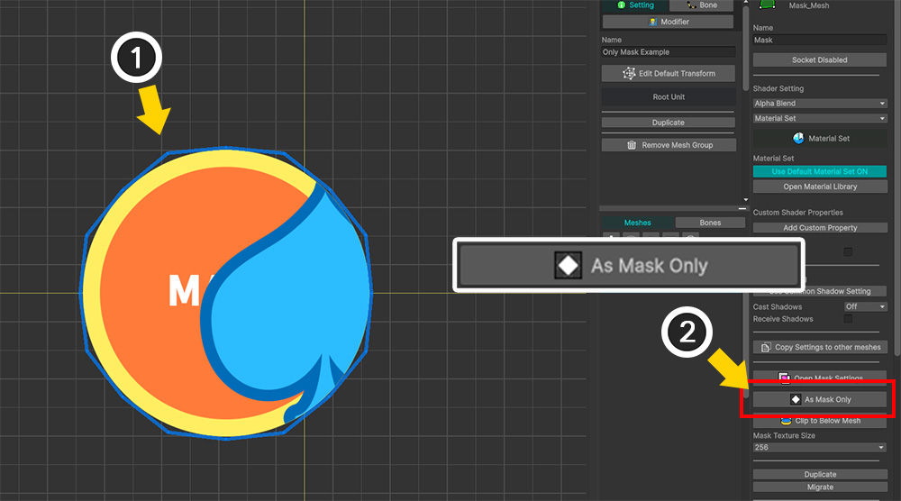
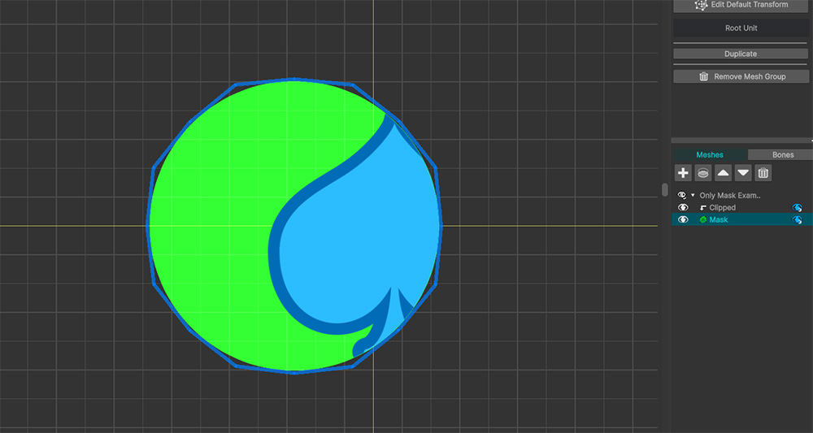
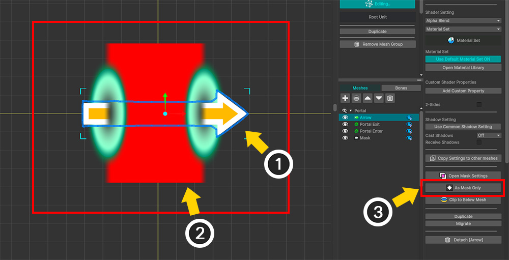

AnyPortrait > マニュアル > マスク専用メッシュ
マスク専用メッシュ
1.6.0
メッシュをレンダリングせずに「マスク」としてのみ使用すると、面白い効果を作成できます。
このページでは、マスクとしてのみ動作する「マスク専用メッシュ」を設定する方法と、これを活用した面白い例を紹介します。
マスク専用メッシュを設定

これは、マスクとして使用されるメッシュ（「Mask」）とクリッピングされるメッシュ（「Clipped」）を持つ簡単な例です。

(1) 「Clipped」メッシュを選択します。
(2) 「クリッピングマスク」ボタンを押して「Mask」からクリッピングするように設定します。

(1) 「Mask」メッシュを選択します。
(2) 右UIの「As Mask Only」ボタンを押します。

「Mask」メッシュが緑色でレンダリングされていることがわかります。
この状態は、「Mask」メッシュが実際にはレンダリングされず、「Clipped」メッシュでマスクを提供する役割のみを実行していることを意味します。
元々はレンダリングにならないはずですが、エディタでは上記のように緑色で見えているのです。

マスク専用メッシュがエディタに表示されないようにしましょう。
(1) 「表示」メニューの「Show Meshes Without Mask」（ショートカット： M ）を押します。

(1) 「Mask」メッシュがエディタでレンダリングされず、クリッピングレンダリングのみが動作することがわかります。
(2) 「マスク専用メッシュ」がレンダリングされているかどうかをアイコンで確認できます。
メモ
M キーを押すと、ワークスペースの状態が「すべてのメッシュを表示」、「マスク専用メッシュ以外のすべてのメッシュを表示」、「メッシュを隠す」に順番に切り替わります。

Unityシーンで確認してみると、上記のようにクリッピングされるメッシュのみレンダリングになることがわかります。
ポータル貫通効果

「マスク専用メッシュ」を使って面白いポータル効果を作りましょう。
(1) 2つのポータル(「Portal」)を矢印メッシュ(「Arrow」)が貫通する効果を作るためにマスクメッシュ(「Mask」)を上記のように配置しました。
(2) 「Mask」メッシュを選択し、「Open Mask Settings」ボタンを押します。

(1) 「Mask」メッシュの「マスクデータ」を作成します。
(2) 「Arrow」メッシュをターゲットメッシュとして登録します。
(3) 「Alpha Mask Preset」タイプのプロパティを追加します。
(4) 「Mask Operation」の値を「Inverse And」に変更します。これにより、マスク領域が反転してクリッピングになります。

(1) 「マスク設定ダイアログ」を閉じて「Arrow」メッシュを動かしてみると、まるでポータルの間から消えるように見えます。
(2) 「Mask」メッシュを選択します。
(3) 「As Mask Only」ボタンを押します。

「Mask」メッシュが「マスク専用メッシュ」になり、上記のように「矢印メッシュがポータルを貫通するような効果」が完成します。